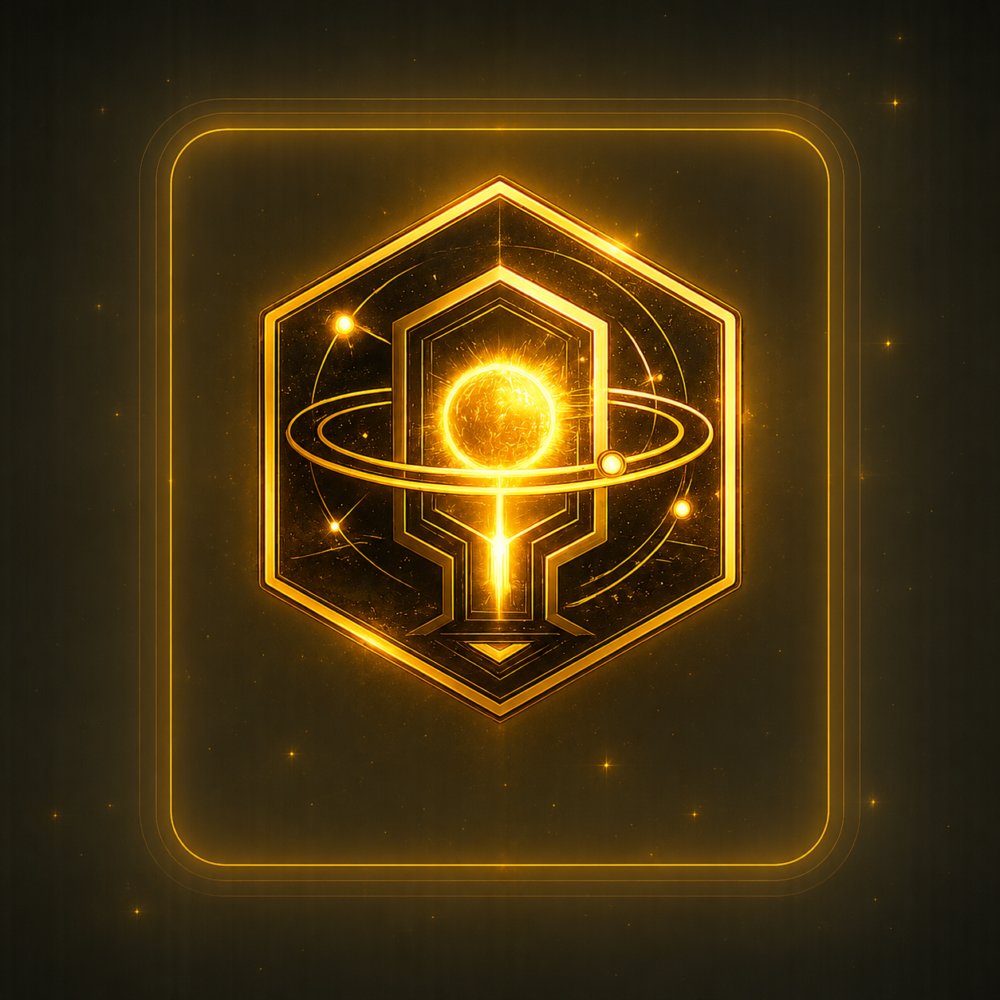
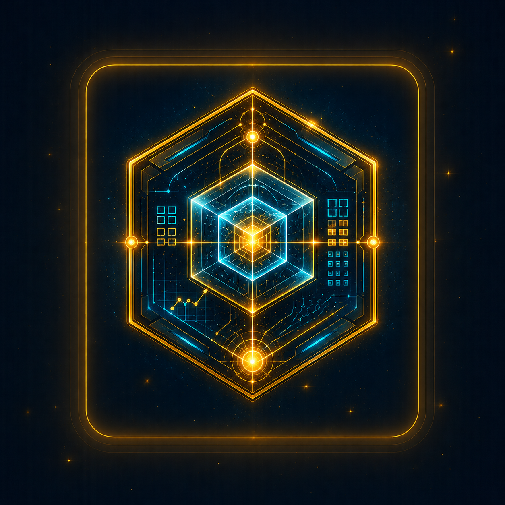
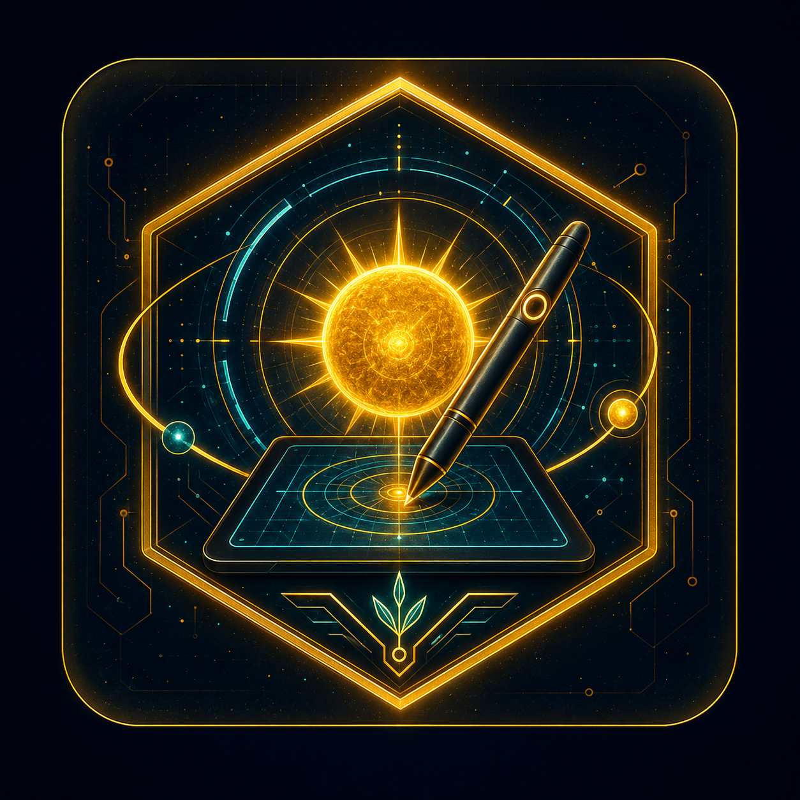

Solar Access Portal
Secure gateway for network entry and identity verification across the Solaris Network. Monitor access flows and node integrity.
Welcome back,

Secure gateway for network entry and identity verification across the Solaris Network. Monitor access flows and node integrity.

Compute solar energy, node output, and network efficiency in real time. Optimize balance between power and performance.

Create and prototype visual systems for interfaces, dashboards, and node layouts with live grid alignment tools.
Track and manage landing points, orbital routes, and landing clearances within the Aurelium sector. Stay aligned and safe.
Manage node credentials, encryption keys, and multi-layer authentication protocols across the Solaris Network.
Browse, filter, and restore historical transmissions and data logs. Preserve network memory and insights.